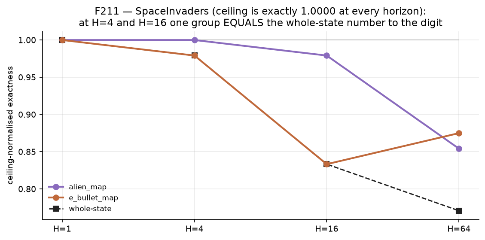
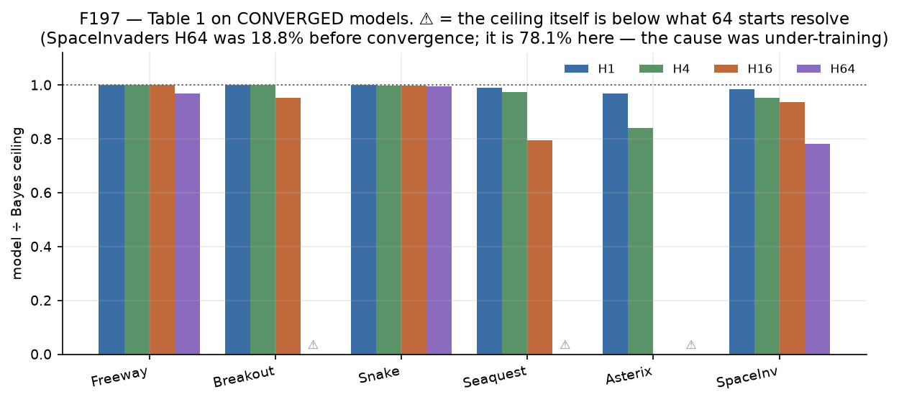
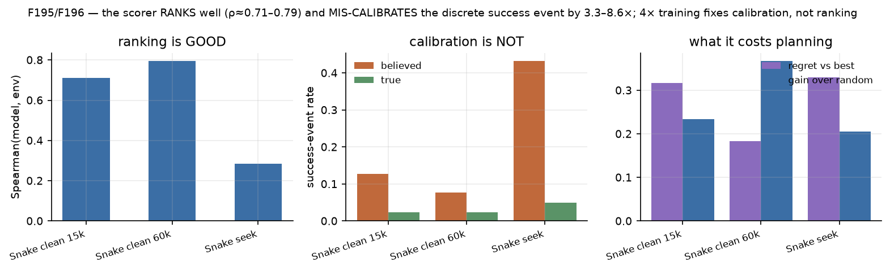

ARBITER — world models that predict the game state, not the pixels
One 5–6M-parameter causal Transformer, one nibble vocabulary, trained from
scratch. Every ceiling on this page is model-free: measured by branching the real
simulator, so it does not depend on our training budget, our seeds, or whether anything
converged. Predicted states are never repaired — illegality is the thing we measure.
The one-line result. The exact-match ceiling of a world model is not a property of
the environment. It is a property of the behaviour policy that generated the data —
the same Snake has a ceiling of 1.0000 under one policy and 0.1562 under another, with no
model or environment change in between. Any exact-match number reported without its
p_stoch is not comparable to any other.
1 · The ceiling moves with the policy — in both directions
We define a stochastic transition model-free and domain-free: a transition is
stochastic iff the K real-simulator branches from (S, A) disagree.
p_stoch is the rate at which a policy walks into such transitions. Freeway is
the built-in null control — it must read exactly 0 under every policy, and it does.
7 environments × 2 policies. Snake puts its randomness at the goal
(eating respawns the fruit at a random cell) so competent play raises entropy.
Breakout puts it at failure (missing the ball) so incompetent play raises it.
Those are the two poles of the law.
The four classes, all cells measured
class
p_stoch
environments
"the model is deficient" well-posed?
I deterministic
identically 0
Freeway, SpaceInvaders
yes — all error is estimation
II policy-sensitive
moves, both ways
Snake (goal-side), Breakout (failure-side)
only once the policy is stated
III saturated
identically 1
Craftax (6/6 cells; no deterministic transition exists)
no
IV population-driven
rises to 1 with N
SkirmishCTF
only at small N
2 · Multi-agent: exact-match dies by multiplication
SkirmishCTF, our own deterministic snapshot/restore engine (rules from Melting Pot
paintball__capture_the_flag). Contention is resolved by an exogenous priority
permutation, so every extra contender adds a coin flip. Left: as live agents go
5.6 → 20.7, p_stoch saturates at exactly 1.0000 and the whole-state ceiling falls
0.916 → 0.626. Right: every per-record ceiling stays ≥ 0.98 the whole way. The joint
collapses because more records must be simultaneously right, not because any record becomes
unpredictable.
Counter-intuitive by-product: the paint/wall_hp grid is where contention
concentrates — the most common contested outcome in a paintball CTF is two beams painting
the same cell — yet its ceiling reads 0.9994–1.0000 throughout. Where contention concentrates
is not where predictability is lost.
3 · At H=1, no component is weak in any environment
Minimum per-group ceiling-normalised accuracy, over every group of every
environment. The floor across all 75 groups of all 7 environments is 0.9393. On the
same weights and the same states, whole-state normalised spans 0.00 to 1.00. The
sharpest single cell: a CTF arm gets zero of 64 whole states exactly right while sitting
at 98.1–100.2% of ceiling on every record kind.
4 · …but that law does not survive over horizon

SpaceInvaders is decisive because its ceiling is exactly 1.0000 at every
horizon (p_stoch = 0), so nothing stochastic can be blamed. At H=4 and H=16 the minimum
per-group number equals the whole-state number to the digit — meaning every state the
model gets wrong is wrong because of one group: e_bullet_map, the enemy
bullet grid. That is the first component-level deficiency this project has found, and it has
a name. Freeway is the null control and stays at 1.0000 at every horizon.
5 · Table 1 — Bayes ceiling vs converged model
Ceilings are model-free (K = 64 real-simulator branches, the evaluator's own
start set). Models are 60k-step specialists. No model exceeds its own ceiling anywhere.

Every bar is model ÷ its own Bayes ceiling. ⚠ marks cells where the ceiling is
below what 64 starts can resolve — we mark them rather than reporting "0% of ceiling".
env
H1 ceil/model/norm
H4
H16
H64
Freeway
1.000 / 1.000 / 100%
100%
100%
0.985 / 0.953 / 96.8%
Breakout
1.000 / 1.000 / 100%
100%
1.000 / 0.953 / 95.3%
(H32 0.656)
Snake
1.000 / 1.000 / 100%
99.9%
99.7%
0.910 / 0.906 / 99.6%
Seaquest
0.916 / 0.906 / 99.0%
97.5%
0.177 / 0.141 / 79.5%
0.0024 / 0.0 / ⚠
Asterix
0.888 / 0.859 / 96.7%
84.0%
0.047 / 0.0 / ⚠
4.5e-6 / 0.0 / ⚠
SpaceInvaders
1.000 / 0.984 / 98.4%
95.3%
93.8%
1.000 / 0.781 / 78.1%
⚠ = the ceiling itself is below what 64 starts can resolve (expected successes
0.15 / 3.0 / 0.0003). That is an instrument floor, not a model failure, and we say so rather
than reporting "0% of ceiling".
The largest correction we have made to our own work: SpaceInvaders H64 was once 18.8% and
was treated as "the worst environment". Retrained to convergence it is 78.1% (38 wins,
0 losses, p < 1e-9). The cause was under-training, not the method.
6 · Planning: near-perfect dynamics buy nothing, and we can say exactly why
On Snake, where the model sits at 94.5–100% of its Bayes ceiling, a model-scored
CEM planner is statistically indistinguishable from random best-of-8 and loses 23–0 to a
three-line greedy heuristic (p < 1e-6). Changing only the CEM prior — training
nothing — takes it 0.125 → 0.531.
The chain closes arithmetically, with two independent predictions each landing within a
point of the measured arms:
the clean corpus never eats the fruit (0 of 64 twelve-step windows), so the model's
belief about that event is barely constrained by data;
the belief is over-predicted 5.5× (0.127 vs a true 0.023) — while ranking is
fine (Spearman +0.712). The broken thing is event calibration, not ranking;
uniform 12-step sequences reach the fruit only 2.3% of the time, so
1 − 0.977⁶⁴ = 0.774 caps even perfect scoring — the oracle arm measured
0.719;
the model believes 8.1 of 64 candidates eat while 1.5 truly do, so its argmax should hit a
real success 1.5/8.1 = 0.19 of the time — it measured 0.125.

Measured with the production scorer over the same uniform population CEM
draws from, on a separate RNG stream so the five planner arms still reproduce their original
run exactly.
Which metric predicts planning utility? Going 15k → 60k on the same corpus, with four of
five planner arms bit-identical: both exact-match variants barely move (one is saturated
at 0.97+, the other is pinned by a ceiling and structurally cannot), while scorer regret
falls 42%, event calibration improves 5.5× → 3.3×, and planning success rises
75% relative. The predictive quantities are scorer-level, not state-accuracy-level.
6b · The 3-D tier — a first-person voxel world, built to our own rules
Everything above has a globally observed, top-down state, so "one state, many
views" is nearly free: all views share one world grid. VoxelWorld removes that.
The state is a 3-D block grid plus entity records; every agent carries yaw and pitch
in the state, turning is an action, and the observation is a first-person
raycast, so occlusion is real.
Why we built this instead of wrapping Minecraft. MineRL, Malmo and Craftium are
far richer, and every one of them fails the three prerequisites this project's method
rests on: determinism (so a ceiling measured by branching is a ceiling and not
engine noise), snapshot/restore (required to branch at all), and state
injection (required for population invariance and for feeding a model's own
prediction back in). Without those, none of the model-free ceilings on this page can be
measured there. Same reason SkirmishCTF was built instead of driving official DMLab2D.
The substrate passes a 13/13 admission gate covering all three plus view-change,
occlusion and render purity — a substrate we wrote ourselves gets held to the check
more strictly, not less, because there is no upstream to blame.
One authoritative state, eight viewpoints. The block grid is asserted
bit-identical across all eight; only a_yaw differs.Occlusion is real: a mob three blocks ahead changes 5.0% of pixels, and a
wall hides it entirely. Without this, the number below would be 1 by construction.
The 3-D tier's headline, and it is model-free — no checkpoint, no training.
Branching the real engine from 1152 ticks across 6 worlds, K=32 draws each:
quantity
value
meaning
p_stochstate
0.1241
chance the world contains
p_stochobs
0.0373
chance one agent can see
visible_chance
0.3007
fraction of the world's randomness reaching this viewpoint
one-step ceiling
state 0.9400 → obs 0.9973
predicting what an agent SEES is easier
So in an egocentric world the ceiling on predicting the observation is strictly
higher than the ceiling on predicting the state, because occlusion hides
70% of the chance. That cuts against the intuition that partial observability always
makes prediction harder — and the flat tier cannot express it at all, since a global
top-down view sees everything and the ratio is 1 by construction.
What it means for the thesis: "predict the authoritative state" and
"predict what the agent sees" are different problems with different ceilings. The
state-carrying interface is being asked for 3.3× more than any single consumer
needs. Boundary stated: one substrate, one stochastic event type, one viewpoint — the
direction follows from rendering being deterministic and is not
substrate-specific, the magnitude 0.3007 is.
What one agent actually receives over a day/night cycle. Night mob spawn is
the substrate's only chance event, and its whole budget is drawn from an exogenous tick
passed into the step function — which is what makes re-running one tick with K draws a
well-defined operation.
6c · One state, arbitrary camera — the 3-D version of the many-views claim
On DeepMind Control we re-place the camera at poses sampled over the viewing sphere,
none of which the model was optimised for, and score the same predicted states through
them. Task cameras and sampled cameras are measured in the same run on the same
starts.
task
free − task worst-view, H1 / H4 / H16 (dB)
free panel spread @H1
task spread @H1
quadruped-run
+2.19 / +2.12 / +2.77
12.04
20.79
walker-walk
+4.83 / +2.87 / −0.02
3.90
10.64
cheetah-run
−0.74 / +1.07 / +0.16
8.32
0.52
fish-swim
+0.13 / +0.83 / +1.24
23.27
9.28
humanoid-walk
−5.51 / −4.50 / −5.14
8.94
4.85
The preregistered negative — "the state is right only from the cameras it was scored
on" — is not supported on 3 of 5 tasks; no task collapses off its own cameras.
humanoid-walk is the one where arbitrary viewpoints reliably find errors the task
cameras miss. The durable result is the other one: a single-view PSNR on these tasks
moves by 10–23 dB purely with the camera you name, whether that camera comes from
the task or from a fair sample of the viewing sphere. That is larger than most
model-vs-model gaps this literature reports.
An earlier version of this panel sampled orbit-distance views only, and we
said so at the time. Widening it to a fair superset of the task framings moved
every task toward "free cameras are harder" — humanoid-walk's deficit grew from
−3.20 to −5.51 dB and fish-swim's panel spread more than quadrupled. The confound was
real; closing it strengthened the spread result rather than weakening it.
7 · Rendering and the live server
Rolled out entirely inside the model — the renderer never sees ground truth.
Left/right pairs below are the two decode modes of the C1 dial on the same start.
Ground truth (the real engine) — the reference.Model rollout, mean-field decode.
Model rollout, component-chain decode. Which of these two wins is set by
the training distribution, not the deployment population — a law we reproduced on a
brand-new per-record metric it had never been fitted to.Theme swap — same predicted state, different renderer. The renderer is a
deterministic function of state, so appearance is free.
Nine SkirmishCTF rollouts inside the model.Craftax, argmax decode.
Same Craftax start, sampled decode. Sampling trades modal mass for
distributional coverage — and it can only do so where there is a distribution, so it
moves the three mob groups and leaves the five near-deterministic ones bit-identical.2.5D isometric view of the same authoritative state.
Snake — ground truth (left) vs model (right).Breakout — ground truth vs model.
~95% of perceptual error comes from the dynamics; the renderer is near-transparent
(true-state LPIPS 0.006).
Per-view render latency is flat at 5.2–6.9 ms from N = 16 to N = 1024.
Cross-view consistency: the teacher control is 100.00% bit-identical; learned/pred
and learned/true are statistically indistinguishable, so the prediction layer adds
≈ 0 extra view drift.
Playing inside the model runs at 5.1 fps (static-KV + cudagraphs, 3.99× speedup,
both configurations bit-identical).
8 · What we have retracted
We keep a public list because several of these were our own headline numbers.
"4× data lifts SpaceInvaders H64 by +0.1406 (p = 0.0352)" — the baseline was one
checkpoint-selection draw weaker than it should have been. Against the correct baseline both
seeds are unresolved (one is exactly 5–5), while the old baseline is itself significantly
worse than a plain run (p = 0.0225). The entire effect was selection, not data.
"Off-policy actions cost essentially nothing" — that read came from a column that
excluded terminated starts, which are precisely the ones off-policy actions damage. On the
ceiling-normalised instrument, degradation is large in 6 of 7 cells.
"Craftax mobs have a 60–87% gap; cows is the weakest cell" — we read the last
table printed in a log and attributed it to the wrong checkpoint and the wrong decode
mode. The truth is that all eight groups sit at ≥ 0.9477. Every table now carries its
ckpt and decode in the caption.
"Factorization gap ≤ +0.0103 everywhere" — the correct bound is +0.0113.
"EARC-25% is unresolved" — at convergence it is resolved harmful
(0 wins, 15 losses, p = 0.0001).
8b · Craftax per group — where the ceilings actually differ
The reason a per-component view is necessary: within a single environment the
model-free ceilings span a factor of three (cows 0.313 → plants 1.000). A whole-state number
averages that away and reports only "this environment is stochastic".
9 · Three scaling axes, two now closed
SpaceInvaders H64 = 78.1% is the only clean estimation target left: p_stoch is identically 0
under both policies and the ceiling is exactly 1.0000, so no stochasticity can be blamed.
axis
verdict
data (4×)
withdrawn — unresolved against the correct baseline
steps (60k → 120k)
resolved HARMFUL — best −0.0938 (0/6, p = 0.0312), last −0.1875 (1/13, p = 0.0018)
capacity (20M)
running
And a result worth its own line: across that 120k run the teacher-forced metric read
0.9893–0.9922 — at or above its 60k values — while the rollout fell significantly. The
quantity used to select checkpoints moved opposite to the quantity being reported.
This is the cleanest argument we have for reporting rollout rather than teacher-forced numbers.
10 · Methodological disciplines (each one was paid for)
verify-then-write — ranges are measured from data and written into the codec;
out-of-range raises rather than clipping.
Numerator and denominator must share space and distribution. The strongest
self-check is "the model exceeds its own ceiling" — that signal caught four separate instrument
errors here.
A guard's threshold must be derived from the failure mode it detects. One of ours
used the precision of the denominator instead, and gave opposite verdicts on the same
data at two sample sizes.
Every number carries its provenance — ckpt, decode mode, cell, n. "The last table in
the log" is not provenance.
Means are not verdicts. Any arm difference below ~20pp ships with a McNemar exact
paired test.
Judge convergence on the reported metric, and evaluate last.pt beside
best.pt — checkpoint selection alone moved a headline by 31 points on
identical weight trajectories.
Full staged report:
STAGE_REPORT_2026-08-26.md ·
previous: 2026-08-25
Every figure on this page is generated directly from the JSON a SLURM job wrote — no value is
recomputed or retyped by hand.